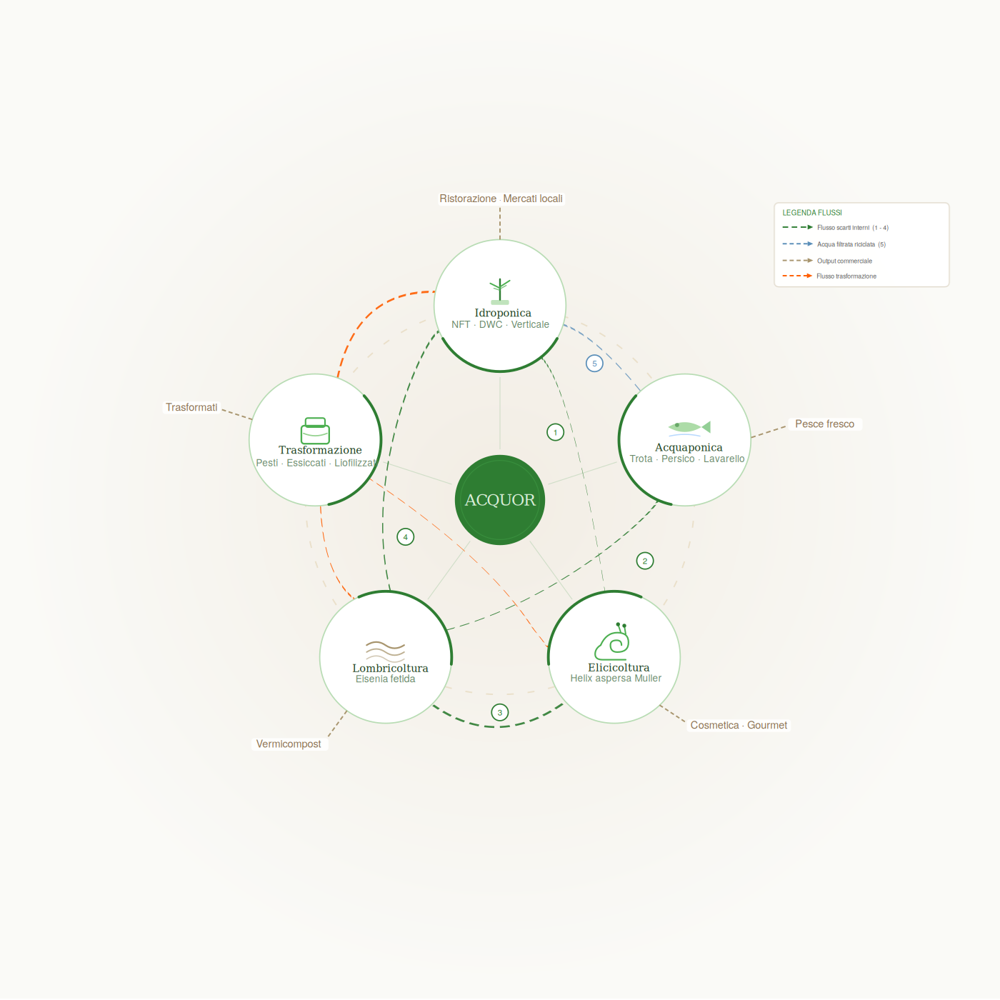

Il sistema circolare
Cinque comparti,
Cinque comparti,
un ciclo chiuso.
Ogni modulo è autonomo ma integrato. Il sistema è progettato per espandersi per fasi, riducendo i rischi e massimizzando i margini incrementali.
